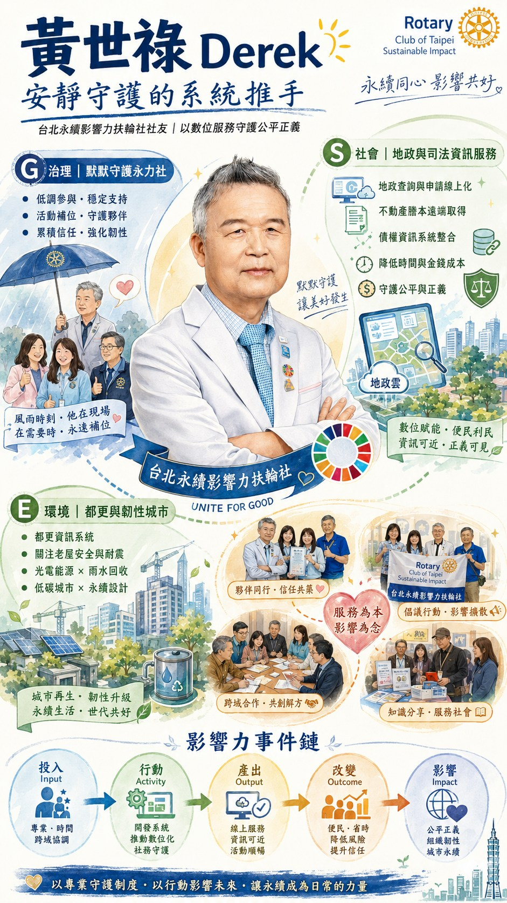

那天到有機農場參訪，天色陰得很快。走到田間小路的最後一段，細雨突然飄下來，路面一下子變得泥濘。社長還在前方邊走邊解說，大家忙著看腳下、也忙著聽內容。就在一瞬間，他沒有提醒、也沒有打斷任何人，只是往前一步，把傘舉高，讓雨落在傘面上，而不是落在正在引路的人身上。
他不是在「做一件好事」，他是在「守住一個節奏」：讓說話的人不被雨打亂，讓隊伍不被天候打散，讓整個行程不必因為小小的意外而失去秩序。
這種低調而精準的照看，正是他一貫的風格。
談起自己的工作，他很少用漂亮的詞。他會說「系統要能用」，但你聽久了會懂，他在意的不是功能清單，而是制度如何被人們真正使用。他長年投入地政與司法相關的資訊系統服務，表面上做的是「查詢」與「申辦」，實質上是在降低制度摩擦，讓權利更容易被理解、被主張、被實現。
以地政領域為例，過去許多人要申請謄本、查詢資訊，常常意味著：請假、搭車、抽號碼牌、排隊、等待、再跑一趟。對熟悉流程的人來說只是麻煩；對不熟悉的人，則很容易因為一次失誤而多跑好幾趟。
當他參與建構全國性的線上查詢與申請流程後，制度的距離被縮短了——不必舟車勞頓、不必承受程序摩擦，資訊透明成為一種日常便利。
而在司法債權保障的相關系統上，他的關注點更直接指向「權利落地」。債權保障牽涉到程序、證明、查詢與追溯，資訊落差往往會放大弱勢。當系統把關鍵資訊與流程脈絡整理得更清楚、查詢更即時，許多原本需要「懂行的人」才處理得順的事情，就能回到制度本身：按規則走、按證據說話。這種透明與可追溯，會在長期累積成社會的信任。
以更生活化的語言說：當資料查得到、流程看得懂、證據連得起來，民眾比較不會因為「不知道該怎麼做」而錯失權利；也比較不會因為資訊不清楚而在窗口前反覆往返。制度的門檻降低，公平才有機會變成日常。
他很少把這些稱為「永續」。但如果我們用 ESG 的視角回看，他的影響力其實很具體，而且是靠一個個「小改變」累積出來的：
這些改變看似分散，但共同指向同一件事：讓制度更可近、讓權利更可及、讓日常更少摩擦。
他在永力社裡也常是同樣的存在——不搶話、不張揚，但會在關鍵處補位：把討論拉回可行、把流程想得更周延、把「熱情」轉成「可以長久運作的方式」。
不是用聲量影響人，而是用可靠讓人安心。
回到那場雨。傘其實不大，但他舉得很穩。
他撐起的不只是社長頭上的雨，而是一種對制度與秩序的信任——讓人相信，公平可以被設計，正義可以被落實，日常可以因此變得更不費力、更靠近每一個人。